Selection and evolution in B cells
Sarah Cobey ; some from Erick
B cells determine antibody diversity
Structure of a B cell receptor
Origins of B cell receptor diversity
VDJ recombination
Affinity maturation
VDJ loci
VDJ recombination
Selection on naive repertoire
Stability
Autoreactivity
Somatic hypermutation is AID + repair
Mutation rate varies over BCR
The mutations have peculiar biases
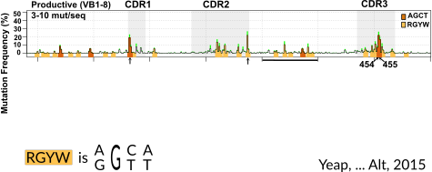
The mutations have peculiar biases
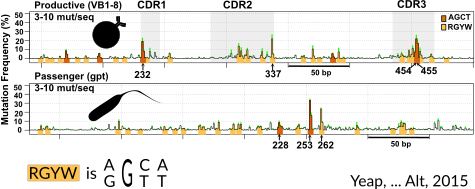
One would like to quantify these biases
Phylogenetics is not straightforward
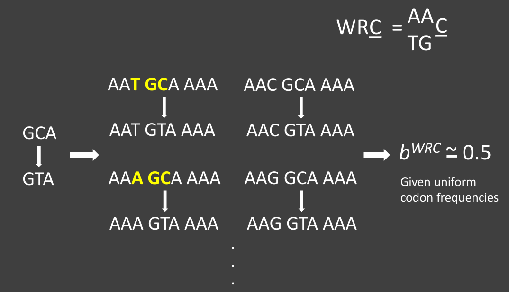
GC B cells evolve
Permissive selection vs complex antigens
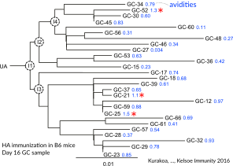
Memory cells can affinity mature
Isotype switching
Clones can be long-lived
Broadly neutralizing antibodies are often highly diverged
Broadly neutralizing antibodies to flu elusive
Why do some people develop broadly neutralizing antibodies?
Can we induce them in everyone?
Will they dominate?
"Restricted" responses to epitopes
Genotype affects response to H5N1 vaccination
Allele copy number affects clone frequency
Ethnic differences in copy number
How can we learn using probabilistic models?
We don’t need lots of little techniques…
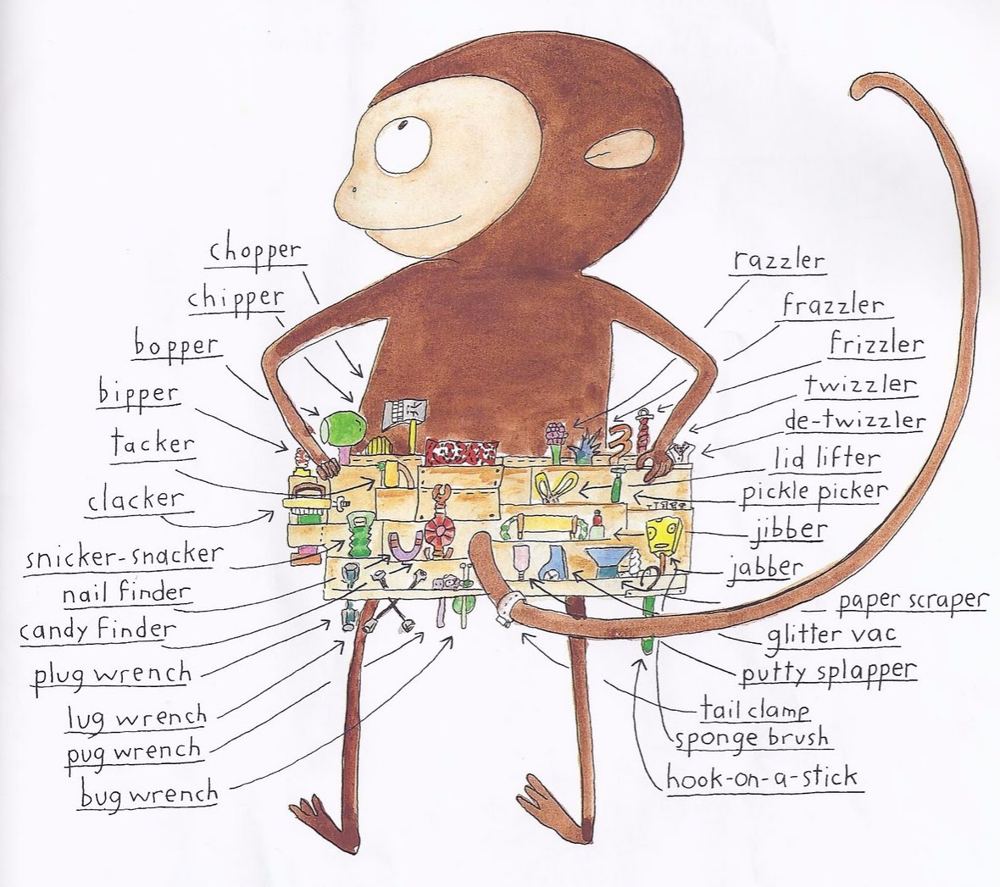
we only need models and one principle: likelihood .
We can sequence BCRs in high throughput
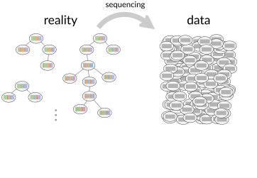
How do we learn from BCR sequences?
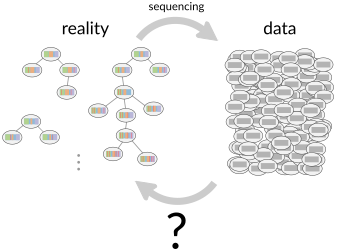
Develop probabilistic model of biological process and how data is generated.
Find parameter choices that maximize the likelihood of generating the observed data.
When a field of bioinformatics is mature, it becomes statistics.E.g. Maximum-likelihood phylogenetics, HMMER, DESeq2, etc.
HMM intro: dishonest casino
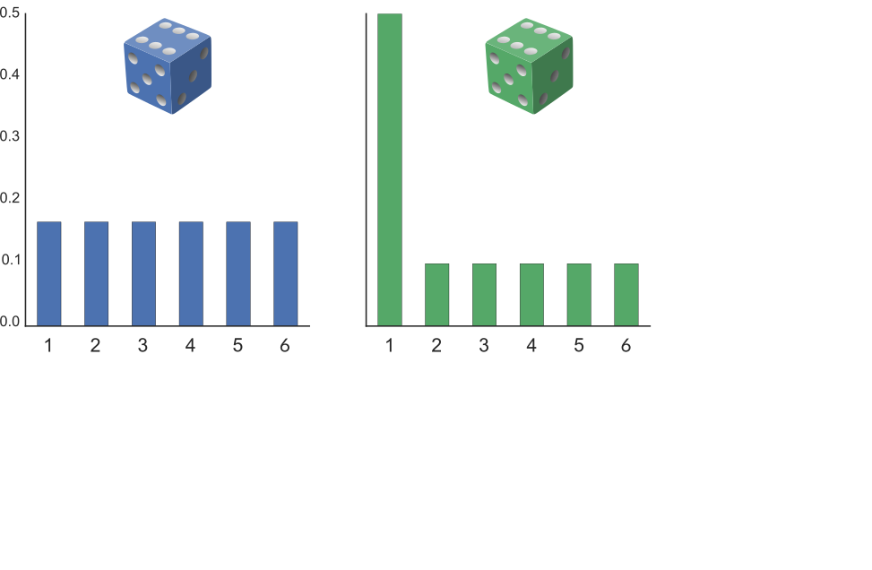
HMM intro: dishonest casino
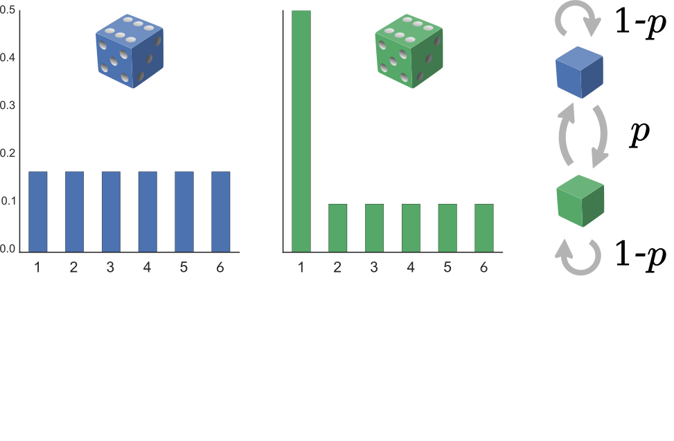
HMM intro: dishonest casino
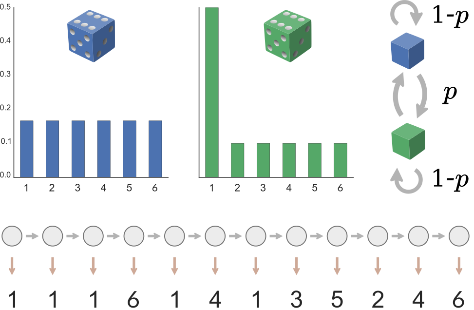
HMM intro: dishonest casino
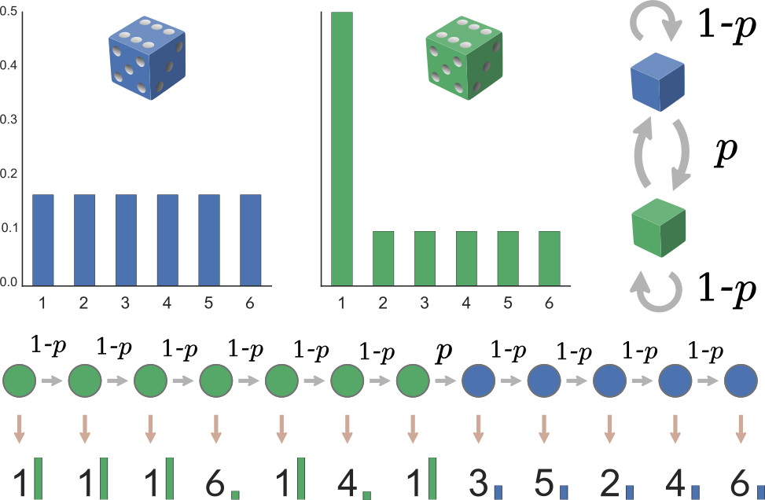
What is the likelihood of the data under this path (write equation)
If \(p\) is close to 0.5, what is an alternate path that will have a higher likelihood? What is this likelihood?
Biased die roll \(\leftrightarrow\) read base (under mutation)\(\leftrightarrow\) changing between V, D, J genes
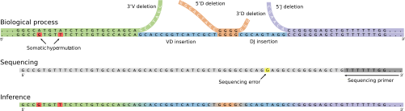
VDJ annotation problem: from where did each nucleotide come?
A: Take maximum-likelihood HMM path.
Distributions are reproducibly weird!
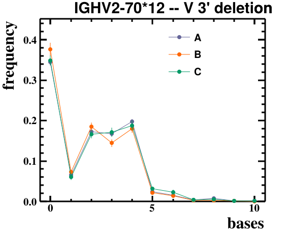
Distributions are reproducibly weird!
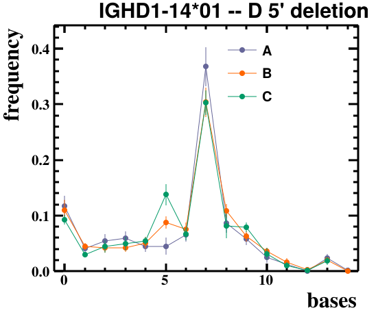 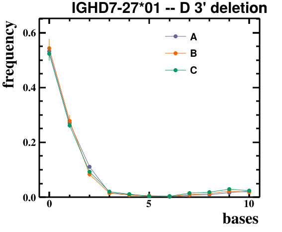 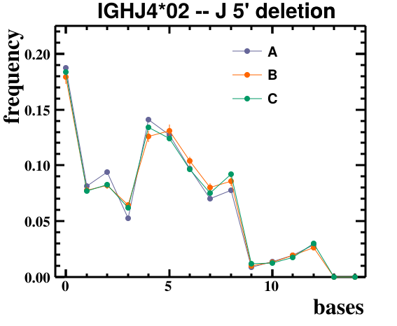
IGHV2-70 12 . number of reads.
Adaptive: 4794 5987 2181
Stanford: 171 110 553 97 126 210 500 597 151 131 358 81 139 99 105
Distributions are reproducibly weird!
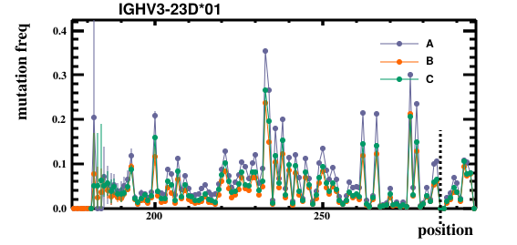 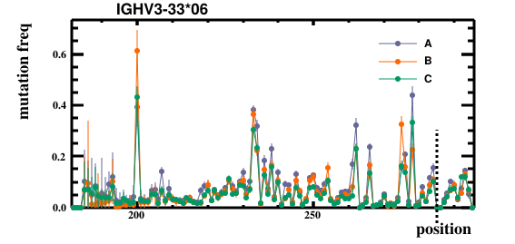
Find clonal families
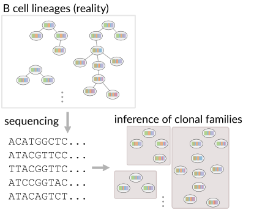
Find clonal families
Did two sequences come from the same VDJ recombination?
Say we are given two sequences
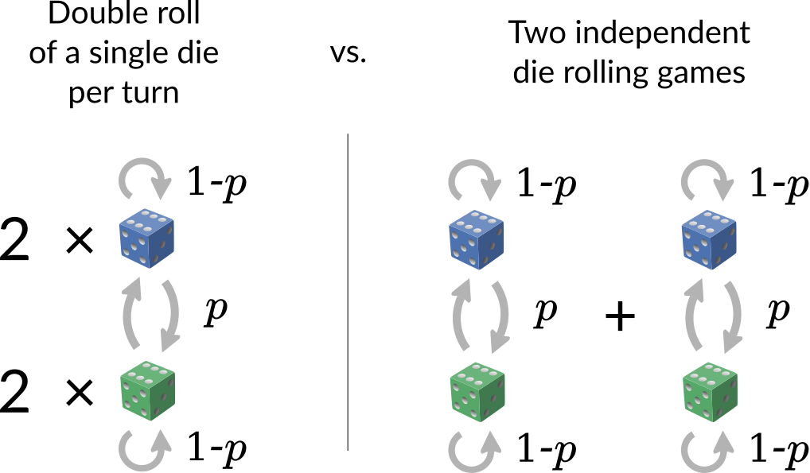
Double roll \(\leftrightarrow\) Pair HMM
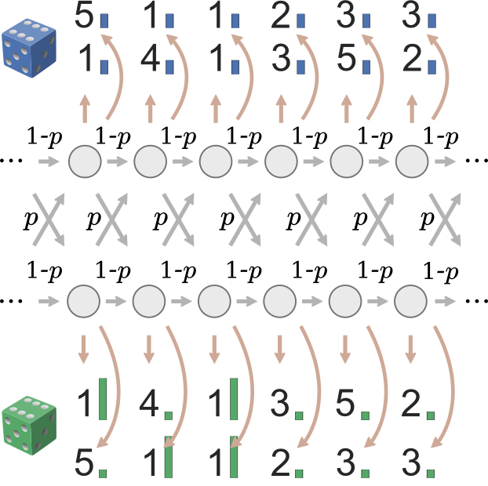
Double roll \(\leftrightarrow\) Pair HMM
Pick double roll hypothesis if it has higher likelihood of generating data.
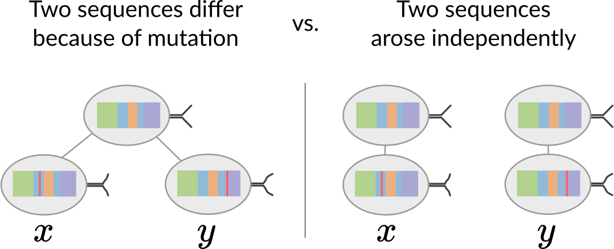
(But we only know the sequences, not the annotations!)
Do two sequences come from a single rearrangement event?
Probability of generating observed sequence \(x\) from HMM:
\[
\mathbb P(x) = \sum_{\text{paths}\ \sigma} \mathbb P(x;\sigma),
\]
Probability of generating two sequences \(x\) and \(y\) from the same path through the HMM (i.e. from the same rearrangement event):
\[
\mathbb P(x,y) = \sum_{\text{paths}\ \sigma} \mathbb P(x,y;\sigma),
\]
\[
\text{Calculate: } \frac{\mathbb P(x, y)}{\mathbb P(x) \mathbb P(y)} = \frac{\mathbb P(\text{single rearrangement})}{\mathbb P(\text{independent rearrangements})}
\]
Do sets of sequences come from a
\[
\frac{\mathbb P(A \cup B)}{\mathbb P(A) \mathbb P(B)} = \frac{\mathbb P(A \cup B \ | \ \text{single rearrangement})}{\mathbb P(A,B \ | \ \text{independent rearrangements})}
\]
Use this for agglomerative clustering; stop when the ratio < 1.
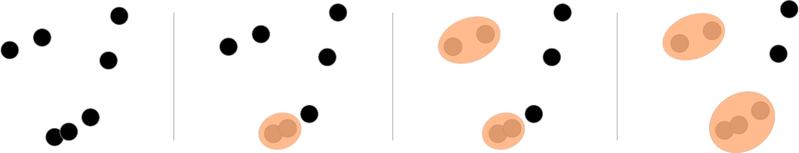
Munshaw, S., & Kepler, T. B. (2010). SoDA2: a Hidden Markov Model approach for identification of immunoglobulin rearrangements. Bioinformatics.
Murugan, Mora, Walczak, & Callan (2012). Statistical inference of the generation probability of T-cell receptors from sequence repertoires. PNAS.
Ralph & M. (2016). Consistency of VDJ Rearrangement and Substitution Parameters Enables Accurate B Cell Receptor Sequence Annotation. PLOS Computational Biology.
Ralph & M. (2016). Likelihood-based inference of B-cell clonal families. PLOS Computational Biology.
Elhanati, Sethna, Marcou, Callan, Mora, \& Walczak (2015). Inferring processes underlying B-cell repertoire diversity. Philosophical Transactions of the Royal Society of London.
Elhanati, Marcou, Mora, & Walczak (2016). repgenHMM: a dynamic programming tool to infer the rules of immune receptor generation from sequence data. Bioinformatics.